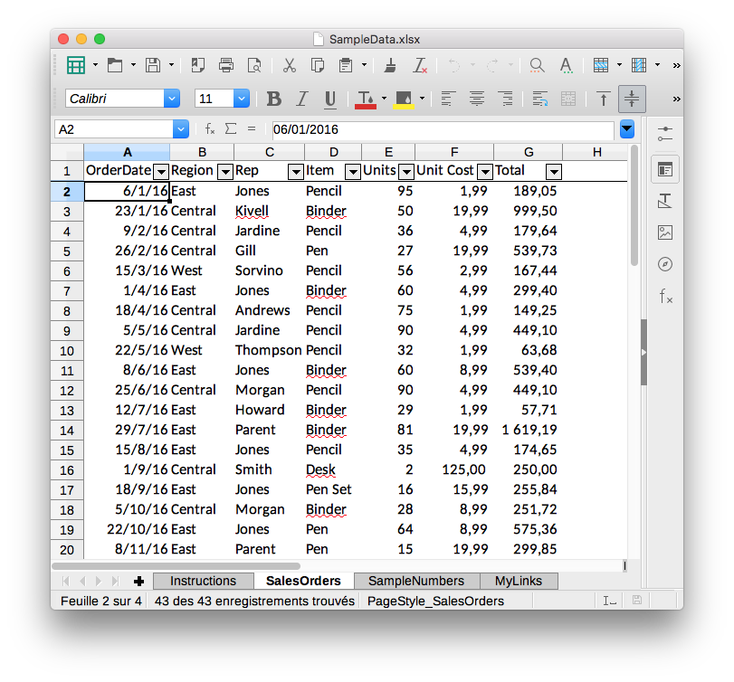

Parsing HTML Tables in Python with pandas
Not long ago, I needed to parse some HTML tables from our confluence website at work. I first thought: I'm gonna need requests and BeautifulSoup. As HTML tables are well defined, I did some quick googling to see if there was some recipe or lib to parse them and I found a link to pandas. What? Can pandas do that too?
I have been using pandas for quite some time and have used read_csv, read_excel, even read_sql, but I had missed read_html!
Reading excel file with pandas¶
Before to look at HTML tables, I want to show a quick example on how to read an excel file with pandas. The API is really nice. If I have to look at some excel data, I go directly to pandas.
So let's download a sample file file:
import io
import requests
import pandas as pd
from zipfile import ZipFile
r = requests.get('http://www.contextures.com/SampleData.zip')
ZipFile(io.BytesIO(r.content)).extractall()
This created the SampleData.xlsx file that includes four sheets: Instructions, SalesOrders, SampleNumbers and MyLinks. Only the SalesOrders sheet includes tabular data:  So let's read it.
df = pd.read_excel('SampleData.xlsx', sheet_name='SalesOrders')
df.head()
That's it. One line and you have your data in a DataFrame that you can easily manipulate, filter, convert and display in a jupyter notebook. Can it be easier than that?
Parsing HTML Tables¶
So let's go back to HTML tables and look at pandas.read_html.
The function accepts:
A URL, a file-like object, or a raw string containing HTML.
Let's start with a basic HTML table in a raw string.
Parsing raw string¶
html_string = """
<table>
<thead>
<tr>
<th>Programming Language</th>
<th>Creator</th>
<th>Year</th>
</tr>
</thead>
<tbody>
<tr>
<td>C</td>
<td>Dennis Ritchie</td>
<td>1972</td>
</tr>
<tr>
<td>Python</td>
<td>Guido Van Rossum</td>
<td>1989</td>
</tr>
<tr>
<td>Ruby</td>
<td>Yukihiro Matsumoto</td>
<td>1995</td>
</tr>
</tbody>
</table>
"""
We can render the table using IPython display_html function:
from IPython.display import display_html
display_html(html_string, raw=True)
Let's import this HTML table in a DataFrame. Note that the function read_html always returns a list of DataFrame objects:
dfs = pd.read_html(html_string)
dfs
df = dfs[0]
df
This looks quite similar to the raw string we rendered above, but we are printing a pandas DataFrame object here! We can apply any operation we want.
df[df.Year > 1975]
Pandas automatically found the header to use thanks to the <thead> tag. It is not mandatory to define a table and is actually often missing on the web. So what happens if it's not present?
html_string = """
<table>
<tr>
<th>Programming Language</th>
<th>Creator</th>
<th>Year</th>
</tr>
<tr>
<td>C</td>
<td>Dennis Ritchie</td>
<td>1972</td>
</tr>
<tr>
<td>Python</td>
<td>Guido Van Rossum</td>
<td>1989</td>
</tr>
<tr>
<td>Ruby</td>
<td>Yukihiro Matsumoto</td>
<td>1995</td>
</tr>
</table>
"""
pd.read_html(html_string)[0]
In this case, we need to pass the row number to use as header.
pd.read_html(html_string, header=0)[0]
Parsing a http URL¶
The same data we read in our excel file is available in a table at the following address: http://www.contextures.com/xlSampleData01.html
Let's pass this url to read_html:
dfs = pd.read_html('http://www.contextures.com/xlSampleData01.html')
dfs
We have one table and can see that we need to pass the row number to use as header (because <thead> is not present).
dfs = pd.read_html('http://www.contextures.com/xlSampleData01.html', header=0)
dfs[0].head()
Nice!
Parsing a https URL¶
The documentation states that:
Note that lxml only accepts the http, ftp and file url protocols. If you have a URL that starts with 'https' you might try removing the 's'.
This is true, but bs4 + html5lib are used as a fallback when lxml fails. I guess this is why passing a https url does work. We can confirm that with a wikipedia page.
pd.read_html('https://en.wikipedia.org/wiki/Python_(programming_language)', header=0)[1]
But what if the url requires authentiation?
In that case we can use requests to get the HTML and pass the string to pandas!
To demonstrate authentication, we can use http://httpbin.org
We can first confirm that passing a url that requires authentication raises a 401
pd.read_html('https://httpbin.org/basic-auth/myuser/mypasswd')
r = requests.get('https://httpbin.org/basic-auth/myuser/mypasswd')
r.status_code
Yes, as expected. Let's pass the username and password with requests.
r = requests.get('https://httpbin.org/basic-auth/myuser/mypasswd', auth=('myuser', 'mypasswd'))
r.status_code
We could now pass r.text to pandas. http://httpbin.org was used to demonstrate authentication but it only returns JSON-encoded responses and no HTML. It's a testing service. So it doesn't make sense here.
The following example shows how to combine requests and pandas.
r = requests.get('https://en.wikipedia.org/wiki/Python_(programming_language)')
pd.read_html(r.text, header=0)[1]
A more complex example¶
We looked at some quite simple examples so far. So let's try a page with several tables: https://en.wikipedia.org/wiki/Timeline_of_programming_languages
dfs = pd.read_html('https://en.wikipedia.org/wiki/Timeline_of_programming_languages')
len(dfs)
If we look at the page we have 8 tables (one per decade). Looking at our dfs list, we can see that the first interesting table is the fifth one and that we need to pass the row to use as header.
dfs = pd.read_html('https://en.wikipedia.org/wiki/Timeline_of_programming_languages', header=0)
dfs[4]
Notice that the header was repeated in the last row (to make the table easier to read on the HTML page). We can filter that after concatenating together the 8 tables to get one DataFrame.
df = pd.concat(dfs[4:12])
df
Remove the extra header rows.
prog_lang = df[df.Year != 'Year']
prog_lang
In what year was Python created?
prog_lang[prog_lang.Name == 'Python']
Conclusion¶
The last example should say it all.
import pandas as pd
dfs = pd.read_html('https://en.wikipedia.org/wiki/Timeline_of_programming_languages', header=0)
df = pd.concat(dfs[4:12])
prog_lang = df[df.Year != 'Year']
Four lines of code (including the import) and we have one DataFrame containing the data from 8 different HTML tables on one wikipedia page!
Do I need to say why I love Python and pandas? :-)
This post was written in a jupyter notebook. You can find the notebook on GitHub and download the conda environment.yml file to get all the dependencies I used.
Comments
Comments powered by Disqus